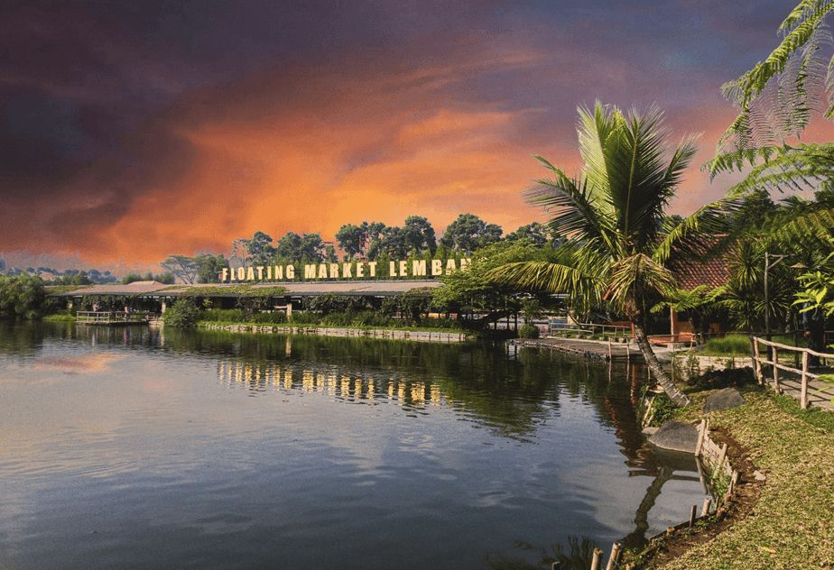
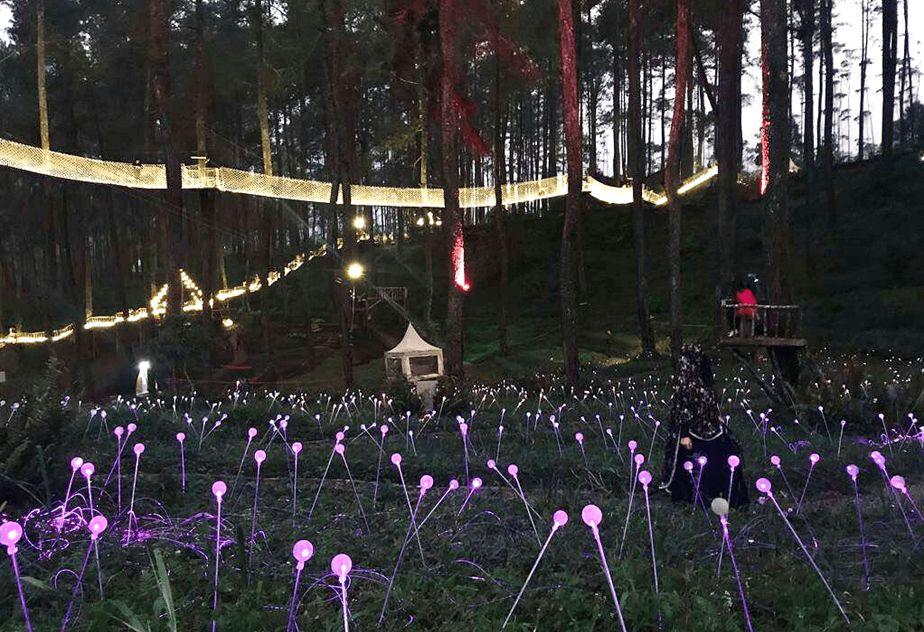

Mulai rencana Bandung-mu
Plan My Trip
Rencanakan perjalanan terbaikmu di Bandung
Dapatkan rekomendasi itinerary AI atau susun perjalanan mandiri dengan rangkaian destinasi terpopuler.
Interactive Route Preview
Jelajahi rute utama Bandung dengan tampilan yang lebih hidup.
1
Gedung Sate
2
Floating Market
3
Jalan Braga
4
Dusun Bambu
5
Orchid Forest
BANDUNG
🤖
AI sedang menyusun perjalanan...
Memilih destinasi, mengoptimalkan rute, dan menyiapkan estimasi budget.
- Memilih destinasi terbaik
- Mengoptimalkan rute
- Menghitung budget
- Menentukan waktu terbaik
- ✨ Itinerary siap!
Itinerary Sehari di Bandung
Rekomendasi AI 21 Juni 202608.00Pagi

Gedung Sate
SejarahIkon arsitektur kebanggaan Bandung dengan gaya arsitektur unik yang memukau.
09.30Pagi

Floating Market
KulinerPasar terapung dengan berbagai kuliner khas Bandung yang menggugah selera.
11.30Pagi

Jalan Braga
BudayaJalan bersejarah dengan arsitektur kolonial Belanda yang menawan dan kafe-kafe unik .
13.00Siang

Dusun Bambu
AlamDestinasi alam yang menenangkan dengan pemandangan indah dan aktivitas outdoor.
15.30Sore

Orchid Forest Cikole
AlamTaman anggrek yang menakjubkan dengan suasana sejuk dan udara segar pegunungan.